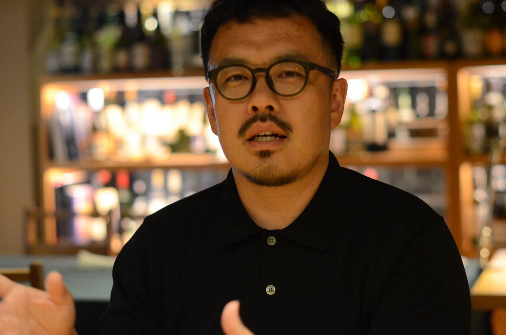

Kyoto · Maizuru × Tokyo · Kagurazaka
Conveying the changing sea.
A gathering of Daiki Kambayashi, who brings fish from Maizuru, and the chefs who prepared it.
Watch both films from this gatheringA TABLE, A PERSON, A PLACE
Producers, chefs and guests.
Stories of people and places born from their encounters.

An evening with Daiki Kambayashi, a fish wholesaler at Maizuru Port. We recorded the seafood of Wakasa Bay, its seasonal changes and the words of those who bring fish to our tables—in writing, photographs and film.
The people who provide the ingredients, the people who cook them and the people who share a table. Their stories on film.
A gathering of Daiki Kambayashi, who brings fish from Maizuru, and the chefs who prepared it.
Watch both films from this gatheringAn evening when an Akaushi beef producer and chefs spoke about the ingredients they shared.
Watch both films from this gathering
At Maizuru Port, he selects fish and brings the work of the sea and its people to the table. President of Maizuru Shokuseikatsu and a fish wholesaler.

A producer bringing Akaushi beef from Aso, Kumamoto, to the table. At a SHIZEN WO SHOKUSU gathering in Kagurazaka, he discussed his work with chefs and guests.

Rooted in French cuisine and drawing on Italian, Japanese and Chinese techniques, Seno moved the producer at the Aso Akaushi gathering with his inventive cooking and red-wine-braised beef cheek.